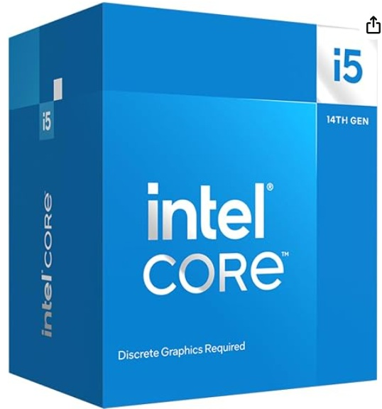
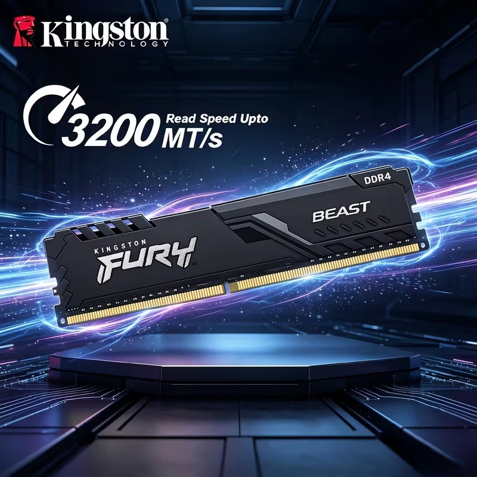
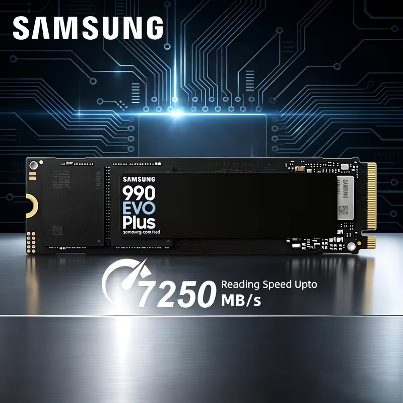
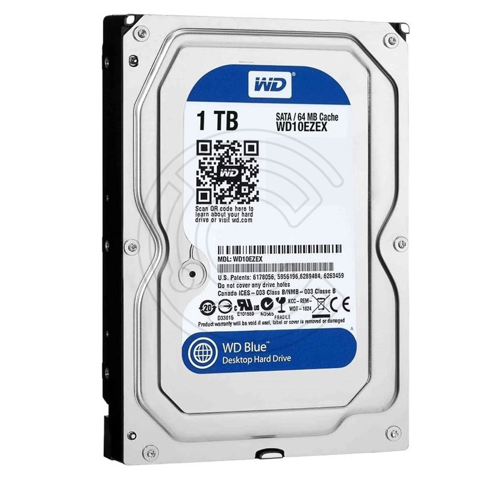
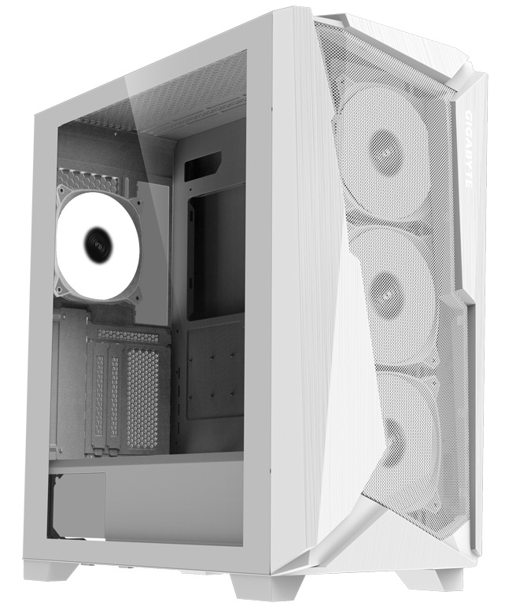

Procesador (CPU)

Ejecuta las instrucciones de los programas y realiza operaciones para el funcionamiento del equipo.
Ver másDescubre los componentes de una computadora y aprende qué función cumple cada uno.
Conoce las piezas que forman una PC y descubre para qué sirve cada una.

Ejecuta las instrucciones de los programas y realiza operaciones para el funcionamiento del equipo.
Ver más
Almacena temporalmente los datos y programas que se están utilizando en la computadora, permitiendo un acceso rápido a ellos.
Ver más
Conecta todos los componentes de la computadora y permite la comunicación entre ellos.
Ver más
Se encarga de procesar y renderizar los gráficos y las imágenes que se muestran en la pantalla del equipo.
Ver más
Almacena datos de manera permanente y permite un acceso rápido a ellos.
Ver más
Almacena datos de manera permanente y ofrece gran capacidad de almacenamiento.
Ver más
Suministra energía eléctrica a todos los componentes de la computadora, convirtiendo la corriente alterna en corriente continua.
Ver más
Protege y alberga todos los componentes de la computadora, proporcionando ventilación y espacio para su instalación.
Ver más
Disipa el calor del procesador y ayuda a mantener una temperatura adecuada durante su funcionamiento.
Ver más
Permite leer discos CD y DVD; si también es grabadora, permite escribir en discos compatibles.
Ver más
Permite la conexión inalámbrica a internet y a otras redes locales.
Ver más
Permite la reproducción y grabación de audio en la computadora.
Ver más